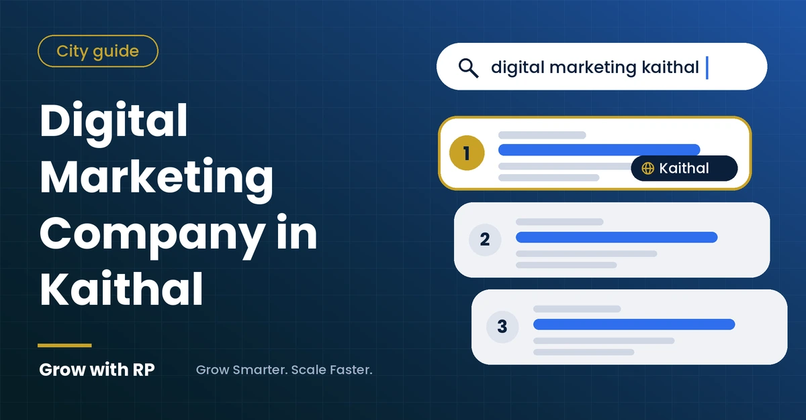

A shop owner in Kaithal opens Google, types a service, and calls the first business that looks trusted. If that business is not yours, you lose the sale before you even know it. A smart digital marketing company in Kaithal helps you win that moment.
This guide shows what a digital marketing agency in Kaithal should do, how an SEO company in Kaithal brings you calls, and how to pick a partner you can trust. Every number below is from 2026 reports.
Kaithal Is Going Online: What the 2026 Numbers Say
Small towns are now driving India's internet growth. That is good news for local brands.
- India's internet subscribers reached 1,114.17 million by June 2026, says TRAI.
- Rural India now makes up about 57% of active internet users, or around 548 million people (IAMAI and Kantar).
- Digital is about 60% of all ad spend in India, and it may reach 64% this year (Pitch Madison).
Your customers in Kaithal and nearby villages are online already. They search, compare, and message before they ever visit your shop.
Digital Marketing Services in Kaithal: What You Can Buy
Good digital marketing services in Kaithal cover the full path, from first search to final sale. Use this table to match each service to your need.
| Service | What it does | Best for |
|---|---|---|
| SEO | Moves your site up on Google | Steady, low-cost leads |
| Local SEO | Puts you on Google Maps | Shops, clinics, schools |
| Social media | Builds trust and repeat buyers | Brands with visual products |
| Meta ads | Brings quick leads from Facebook and Instagram | Offers, launches, events |
| Website work | Turns visitors into callers | Every business |
| Content | Answers buyer questions | Long-term growth |
An online marketing company in Kaithal should explain each line in plain words and tie it to your sales goal.
SEO Company in Kaithal: Get Found Before Your Rivals
Search engine optimization (SEO) helps Google understand your business and show it to the right people. A strong SEO company in Kaithal works on three layers:
- Technical layer: Fast pages, mobile-friendly design, and no broken links.
- Content layer: Pages and posts that answer real buyer questions.
- Trust layer: Reviews, listings, and links from respected sites.
These SEO services in Kaithal need time, so ask any SEO agency in Kaithal for a monthly plan and a simple report. Only about 3.45% of pages get search traffic from Google, according to Ahrefs, so random posting will not work. You need a plan.
Local SEO Services in Kaithal: Win the Map Results
Most buyers want a business close by. Local SEO services in Kaithal make sure they see you first.
- 46% of people often add "near me" to their searches (BrightLocal).
- 73% of local searches start on a phone (BrightLocal, 2026).
- Buyers pick based on clear details (32%), good reviews (30%), and clear pricing (29%).
Five quick wins you can start today:
- Claim and complete your Google Business Profile.
- Add real photos of your shop, team, and work.
- Ask happy customers for honest reviews.
- Keep your name, address, and phone number the same everywhere.
- Reply to every review within two days.
This is also how you show up when people type "digital marketing company near me."
AI SEO: The 2026 Update from Grow with RP
Google now shows AI answers above many search results. Grow with RP now offers AI SEO to keep your brand visible there. The team writes clear, trusted pages so Google AI Overviews and AI tools can find your business and cite it, even when fewer people click.
Social Media Marketing and Meta Ads for Kaithal Brands
Reels and short videos rule India's phones. About 588 million Indians, or 61% of internet users, watched short video in 2025 (IAMAI and Kantar).
A social media marketing agency in Kaithal plans your posts, reels, and replies so people remember your brand. A Meta ads agency in Kaithal then runs paid ads on Facebook and Instagram. You pick the area, age group, and interest, so each rupee reaches the right buyer.
Use both together. Organic posts build trust. Ads bring fast calls.
Website Design Company in Kaithal: Make Every Click Count
A website is the place where your marketing turns into money. If it opens slowly, visitors leave.
- 53% of mobile users leave a page that takes over 3 seconds to load (Google).
- Mobile now brings about 59% of web traffic (HTTP Archive, September 2026).
A skilled website design company in Kaithal builds pages that load fast and read well on small screens. A good website development company in Kaithal also adds call buttons, simple forms, and clean code, so Google and your visitors both understand the page.
How to Choose the Best Digital Marketing Agency in Kaithal
Ask these seven questions before you sign:
- What goal will you work toward for my business?
- Which channels will you use, and why?
- How will you track calls, leads, and sales?
- Can I see a sample monthly report?
- Who will manage my account day to day?
- What does the price include, and what costs extra?
- How long before I should see the first results?
The best digital marketing agency in Kaithal gives clear, honest answers. An affordable digital marketing agency in Kaithal is a great choice when the low price still comes with a real plan and real reports. Run from anyone who guarantees rank one.
Grow with RP: Digital Marketing Company in India, Built for Kaithal
Grow with RP is a digital marketing company in India that helps Kaithal businesses grow online. The team offers SEO, AI SEO, social media marketing, Meta ads, website design, and website development. Each plan starts with your goal, then moves to action and simple reports.
Ready to see where your business stands on Google? Contact Grow with RP for a clear review and a plan that fits your budget.
FAQs: Digital Marketing and SEO in Kaithal (2026)
Why does my business need a digital marketing company in Kaithal?
Your buyers search online before they shop. Rural India holds about 57% of active internet users (IAMAI and Kantar), so Kaithal buyers are online. A digital marketing company in Kaithal helps them find you first.
What does a digital marketing agency in Kaithal do each month?
It runs your SEO, posts, ads, and website fixes. It then sends a report with traffic, calls, and leads. Ask for this report before you start.
What is the difference between an SEO company in Kaithal and an online marketing company in Kaithal?
An SEO company works only on your Google rank. An online marketing company also runs ads, social media, and email. Pick one that fits your goal and budget.
How long do SEO services in Kaithal take?
Most businesses see early movement in about three to six months. Results depend on your site, your market, and your content. Ahrefs reports that about 96.55% of pages get no Google traffic, so steady work matters.
Are local SEO services in Kaithal worth the cost?
Yes, for shops and service providers. About 46% of people often add "near me" to searches, and 73% start local searches on a phone (BrightLocal). Local SEO places you in front of those buyers.
Do I need a social media marketing agency in Kaithal?
Yes, if your buyers use Instagram, Facebook, or YouTube. About 61% of Indian internet users watched short video in 2025 (IAMAI and Kantar). An agency keeps your posts regular and on brand.
When should I use a Meta ads agency in Kaithal?
Use one for fast results, such as a sale, a new product, or an event. Meta ads let you target by area and interest. Pair them with SEO for lasting growth.
What should I check before hiring a website design company in Kaithal?
Check speed, mobile design, and clear call buttons. Google data shows 53% of mobile users leave pages that load in over 3 seconds. Ask for a speed test before launch.
How can I find the best digital marketing agency in Kaithal, or one near me?
Search "digital marketing company near me," then compare reviews, reports, and prices. Look for plain answers and real examples. Pick the team that explains its plan best.
Is AI SEO different from normal SEO in 2026?
AI SEO builds on normal SEO. It adds clear, trusted answers that AI tools can quote. Google still holds about 90% of search (StatCounter), but AI summaries cut the top result's clicks by about 34.5% (Ahrefs). So both matter.
Final Thoughts
Online growth needs a clear plan, steady effort, and honest numbers. Choose a digital marketing company in Kaithal that fits your goal, and an SEO company in Kaithal that explains each step. To work with a digital marketing company in India that knows local brands, contact Grow with RP today.
Sources
- India's internet users cross 1.11 billion in June 2026, TRAI
- India's internet user base crosses 950 million in 2025, IAMAI and Kantar
- India's Ad Market Hits ₹1.55 Lakh Crore: Digital Now 60%, Pitch Madison Advertising Report 2026
- India's ad economy crosses digital milestone, 64% share projected for 2026, Exchange4media
- Local SEO Statistics, BrightLocal
- Local SEO Statistics, BrightLocal (consumer decision factors)
- SEO Statistics for 2026, Ahrefs
- AI Overviews and click rates, Ahrefs
- Site Speed Statistics 2026, Colorlib (HTTP Archive data)
- Website Speed and Performance Statistics 2026, Searchlab (Google mobile speed study)
Get a Free Consultation
Tell us about your business and we will suggest a plan that fits.
Talk to Grow with RP